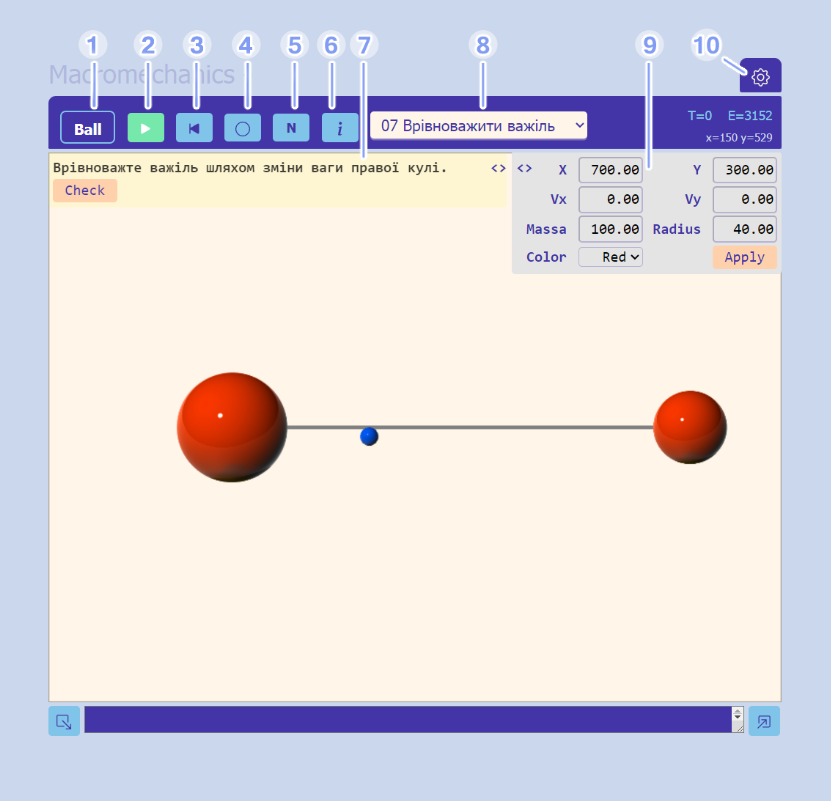
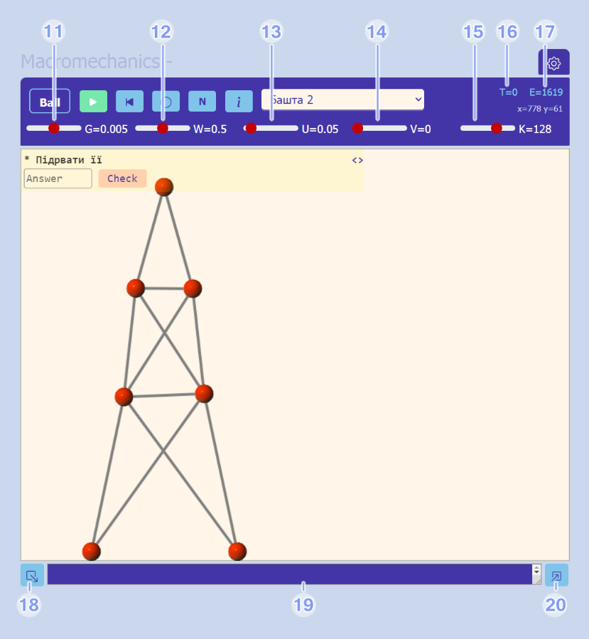
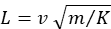

Треба обрати задачу зі списку (8), прочитати умову на панелі (7), вирішити задачу і знайти відповідь, ввести відповідь в поле вводу під умовою або встановити параметри сцени згідно до знайденої відповіді і натиснути кнопку Check на панелі умови. Якщо відповідь вірна, фон сцени забарвиться зеленим. Якщо відповідь невірна, треба шукати інше рішення.
Коли в умові задачі даних недостатньо, їх можна отримати з параметрів сцени. Щоб побачити параметри елемента сцени, треба обрати його, клацнувши мишею. Параметри обраного елемента з’являться на панелі параметрів (9), де їх можна не тільки бачити, а і змінювати. Зміни вступають в дію після натискання кнопки Apply на панелі параметр

1 – кнопка перемикання режиму створення: B – кулі, L – лінії перешкод, K – перемички
2 – вмикання-вимикання відображення траєкторій куль
3 – кнопка програвання або паузи
4 – кнопка повного або схематичного відображення
5 – кнопка відкату часу до моменту останньої зупинки
6 – кнопка довідки
7 – панель умови задачі
8 – список задач, відкритих до вирішування
9 – панель параметрів обраного об’єкта
10 – посилання на сторінку управління задачами
Створювати задачі може лише зареєстрований користувач.
Задача складається з 4-х частин: назви, умови, сцени і шаблону відповіді.
Назва задачі має бути унікальною в межах застосунку.
Умова містить мету задачі і чисельні дані для її вирішення. Якщо даних в умові недостатньо, необхідну інформацію треба закласти в параметри сцени. Для того, щоб глобальні параметри були доступні при вирішенні задачі, умову задачі треба починати із зірочки «*».
Сцена є json-описом об’єкта Box, який включає колекцію куль, колекцію перешкод, колекцію перемичок, а також всі глобальні параметри.
Шаблон відповіді є або дійсним числом, або логічним виразом.
Задачі зберігаються в базі даних. Кожен зареєстрований користувач може створювати і зберігати в базі власні задачі. Щоб отримати доступ до такої можливості, треба натиснуті кнопку (10).
Вирішення задачі полягає в тому, що користувач обчислює і встановлює початкові параметри сцени або знаходить якесь числове значення.
Якщо відповіддю є число, воно порівнюється в межах похибки 1% з шаблоном відповіді, який в цьому випадку також є числом.
Якщо відповіддю є налаштування параметрів сцени, шаблон відповіді є логічним виразом.
Для перевірки відповіді користувача налаштована їм сцена запускається і програється без відображення на протязі 1000 тактів дискретного часу. На кожному такті обчислюється значення логічного виразу із шаблону, і коли на якомусь такті він стає правдивим, перевірка припиняється і задача вважається вирішеною вірно. Якщо на протязі всього часу програвання вираз зостається неправдивим, задача вважається не вирішеною.
Вираз може містити змінну t – такт дискретного часу, змінні m, x, y, vx, vy, - параметри першої кулі, m1, x1 y1, vx1, vy1, - параметри другої кулі в колекції куль. Вираз пишеться мовою JS.
Наприклад, в задачі влучання кулею в баскетбольну корзину відповіддю є вираз
t > 350 && 570 < x && x < 640 && y < 80
Тобто, якщо в деякий момент часу після 350-го x-координата першої кулі опиниться в межах від 570 до 640, а y-координата буде менша за 80, то користувач правильно встановив параметри сцени і успішно вирішив задачу.
Відповідь у вигляді логічного виразу охоплює цілу низку можливих рішень, кожне з яких є комплексом значень параметрів.
Сцена складається з трьох типів об’єктів – куль, перешкод та перемички. Робота з кожним типом об’єктів відбувається у відповідному режимі редактора сцен, режими перемикаються кнопкою (1).
Кулі і перешкоди додаються за допомогою миші. Перемички між двома кулями створюються двома послідовним кліками по кулям, які з’єднуються перемичкою.
В кожному з режимів редактору один з об’єктів може бути обраним. Параметри обраного об’єкту відображуються на панелі параметрів і можуть бути змінені користувачем. Щоб зміни вступили в силу, користувач має натиснути кнопку «Apply» на панелі параметрів. Положення і швидкість кулі можна також змінювати за допомогою миші.
Щоб видалити будь-який об’єкт зі сцени, треба обрати його і натиснути клавішу Del.
Коли сцена створена, можна запустити модельний час кнопкою (3) і спостерігати сцену в динаміці. В будь-який момент модельний час можна зупинити, щоб дослідити поточні параметри об’єктів. Можна програвати сцену по крокам із зупинкою після кожного такту модельного часу (клавіша з літерою «S»).

11 – прискорення сили тяжіння g.
12 – коефіцієнт втрати енергії при стиканні куль W. W = 0 означає, що втрат енергії немає, W = 0.5 означає, що при лобовому стиканні кулі з перешкодою її кінетична енергія зменшиться вдвічі. Якщо стикання не лобове, зменшення стосується лише тангенціальної складової швидкості. Якщо дві кулі стикаються між собою, енергію втрачають обидві кулі.
13 – коефіцієнт втрати енергії при деформації перемичок U. Деформація полягає в розтягуванні або стисканні перемички. Зауважимо, що кількість актів деформації перемички набагато більша, ніж стикань куль, тому значення U варто обирати ближче до нуля, ніж значення W.
14 – в’язкість повітря V. З-за опору повітря куля також може втрачати енергію. При повільному руху куль сила спротиву пропорційна радіусу і швидкості кулі. V = 0 означає, що спротиву повітря немає.
15 – модуль пружності матеріалу куль K. Від нього залежить розмір деформації при стиканні, яка підкоряється формулі  . Зменшення модуля пружності призводить до збільшення деформацій і це підвищує точність розрахунків. Втім, занадто великі деформації призводять до руйнації моделі.
16 – покажчик дискретного часу T.
17 – загальна енергія сцени E.
18 – кнопка збереження поточної сцени.
19 – збережена сцена в форматі JSON.
20 – кнопка відтворення збереженої сцени.
Кнопка (10) відкриває сторінку розробника задач. На ній він може додавати, редагувати і видаляти будь-яку зі своїх задач.
Також можна відкривати і приховувати задачі, лише відкриті задачі будуть доступні для вирішення.